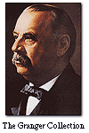

|
Here at the World’s
Columbian Exposition, electric power reigns. Its invisible particles connect all
the marvels on display. Thousands of
electric
lamps illuminate the pathways of the extensive grounds, the facades and
interiors of the magnificent buildings, and the 65,000 exhibits. In fact, electric
power drives everything that moves or makes sounds in the fair.
On May 1, 1893, President
Grover Cleveland opened the fair by pressing a gilded telegraph key and closing
an electrical circuit, thus setting all the machinery of the fair into motion.
|
 |
| Grover
Cleveland |
|